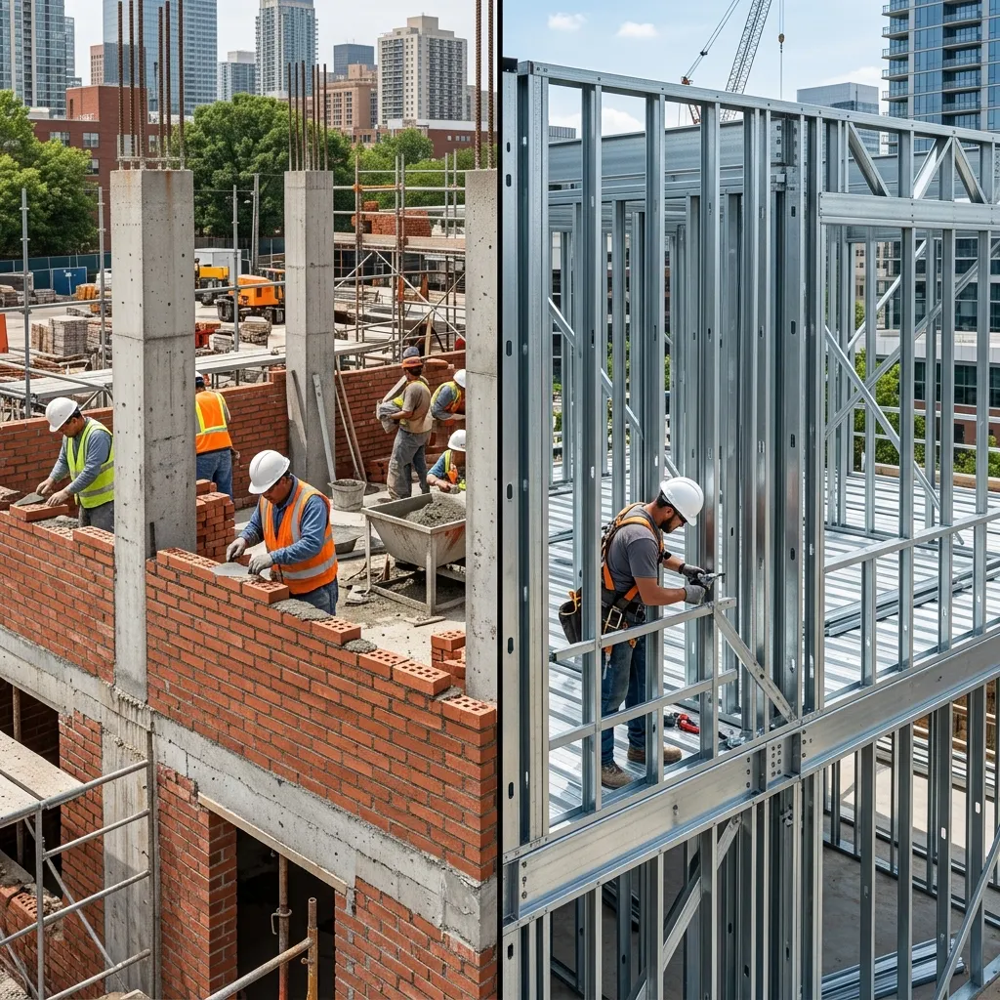
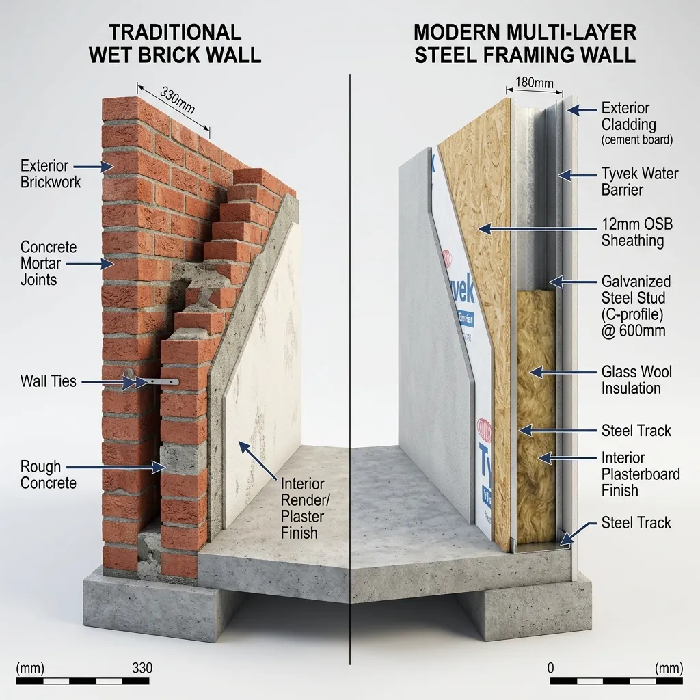
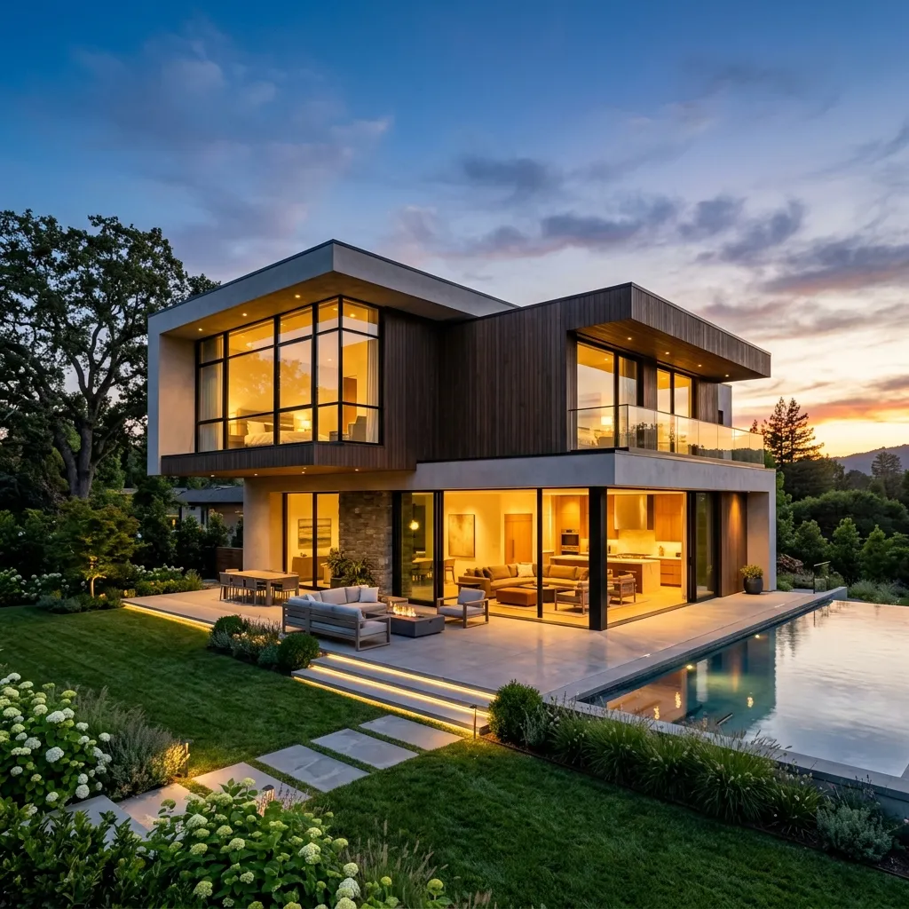

Steel Framing vs.
Construcción Tradicional
¿Cuál es la mejor opción para construir tu hogar? Comparamos objetivamente la obra húmeda tradicional contra el sistema sismorresistente en seco de Steel Framing. Descubrí el impacto real de cada sistema en tiempos de construcción, sustentabilidad térmica, desperdicio de material y control financiero.

analytics Precisión de Ingeniería vs. Obra Húmeda
Comparación directa de sistemas estructurales para casas de alta eficiencia.
Simulador de Plazos e Impacto de Obra
Deslizá el control para ingresar los metros cuadrados proyectados de tu vivienda y mirá cómo impacta la elección del sistema en tu obra.
Evaluamos el impacto real basado en obras ejecutadas por nuestro equipo de ingeniería. El cálculo proyecta la diferencia de plazos en meses, el tonelaje de desperdicio y los metros cuadrados de superficie útil neta que ganas debido al menor espesor de muros eficientes.
Plazo de Obra Estimado
¿Cuándo te mudas?
Diferencia financiera: En Argentina, una obra 3 veces más rápida te protege del encarecimiento mensual de mano de obra por inflación.
Desperdicio de Material
Escombros y descarte pago
En la obra húmeda pagás materiales que terminan en contenedores de escombros (volquetes).
Espacio Útil Neto Ganado
Superficie transitable interna
Equivale a un baño completo o vestidor gratis
Las paredes de Steel Framing de 15cm rinden igual que muros de ladrillo de 25cm. Menor espesor de muro = más metros transitables dentro del hogar.
Ahorro Térmico Anual Est.
Climatización (Luz/Gas)
Ahorro permanente de hasta el 60% anual
El aislamiento continuo con lana de vidrio y barreras mantiene la casa fresca en verano y cálida en invierno con mínimo consumo eléctrico.

Transmitancia y Capas de Aislamiento
El secreto de la eficiencia energética del Steel Framing reside en su sistema multicapa. A diferencia del ladrillo macizo, que es un conductor térmico y acumula humedad, los paneles de perfiles de acero aíslan activamente de los extremos climáticos de Tucumán.
Muro Multicapa Termoacústico
Compuesto por revoque plástico exterior (EIFS), placa cementicia, barrera de viento y agua, placa OSB, perfiles de acero con lana de vidrio de alta densidad y placa de yeso interior.
Mampostería Clásica de Obra
Compuesto por ladrillo hueco o común de 18 cm con revoque grueso y fino a la cal. Al no poseer barrera de vapor ni aislamiento de cámara, produce puentes térmicos constantes y filtración de humedad por capilaridad.
Tabla Comparativa
| Especificación | Steel Framing (Obra en Seco) | Construcción Tradicional (Ladrillo) |
|---|---|---|
| Tiempos de Obra (150 m²) | 3 a 4 Meses | 10 a 12 Meses |
| Desperdicios de Material | < 2% (Cómputo milimétrico) | 15% a 25% (Escombros y roturas) |
| Aislamiento Térmico (Transmitancia K) | Excelente (K = 0.35 W/m²K) | Deficiente (K = 1.85 W/m²K) |
| Peso Propio de la Estructura | Liviano (~45 kg/m² - Placa de fundación liviana) | Pesado (~350 kg/m² - Requiere zapata corrida y cimientos profundos) |
| Espesor de Muros (Ahorro de espacio) | Delgado (~15cm) - Ganas hasta un 6% de espacio neto | Grueso (~25-30cm con revoques) |
| Reformas e Instalaciones | Fáciles, rápidas, limpias y sin picar mampostería | Pesadas, ruidosas y requieren romper ladrillo |
| Consumo Climatización Mensual | Hasta 60% Menor | Estándar de consumo ineficiente |
| Costo Promedio Llave en Mano | USD 1100 - 1250 / m² | USD 950 - 1150 / m² |
Dudas Comunes sobre Sistemas Constructivos
¿El Steel Framing es más caro que la construcción tradicional?
add¿Es seguro contra tormentas y sismos en Tucumán?
add¿Se pueden realizar reformas o ampliaciones a futuro?
add¿Qué mantenimiento requiere una casa de Steel Framing?
addContenido Relacionado
Ahorro Energético
Descubre cómo reducir hasta un 60% el consumo de calefacción y refrigeración con aislamiento premium.
Sistema Steel Framing
Descubre cómo funciona la composición por capas y la estructura metálica sismorresistente.
Ventajas y Desventajas
Análisis honesto y detallado de los pros y contras de edificar en seco en el NOA.
Construcción en Seco
Guía completa sobre materiales, Durlock, placas cementicias y cotizaciones por m².

Da el salto a una casa moderna y eficiente
Construí tu casa con el sello de calidad de Constructora ByB. Obra llave en mano garantizada por contrato, cálculo de ingeniería estructural riguroso y los mejores plazos de entrega del norte argentino.